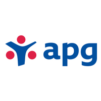

My Story
Hey!
-

2002
APG Asset Management
I have been working here; since 2018 October
-

2015
Studying at NYU
nyu Management and Systems with Database Technologies Concentration
-
Hi
There
:)
Experience
ESG Data Analyst Intern
• Bridge the gap between business and IT: write queries in SQL Server, build dashboard on Qlik Sense for business use, and hold demo sessions to non-technical people; the dashboards are used as the prototype of client reports for the largest client, ABP (contributed $450+ billion pension fund)
• Improve SQL query efficiency and decreased the run-time of the dashboards by 75%
• Executed an 8-month global project to ensure APG’s environmental, social, and governance (ESG) investment strategy is well embedded in its small-cap, high-yield investments by conducting research and reaching out to current portfolio holding companies, communicating APG’s ESG considerations, and analyzing information received from the companies
• Led training sessions to transfer research knowledge from the ESG team to the Fixed Income team so that the credit analysts can carry on the board’s investment policy in future investments and meet the board’s annual performance target
Research Executive
• Conducted market research for healthcare and pharmaceutical companies, maintained and acquired clients (Nestle, Merck, Novartis, Sanofi, GSK, etc.) with $10K - $250K per sales, and managed up to 10 projects concurrently
• Conducted qualitative interviews and focus groups with healthcare professionals and patients, delivered insights by writing client reports with charts, graphics, and trend analysis, and supported QA session during on-site presentations to clients
Intern
• Decreased operation time by organizing data sets of past 6 years’ revenue in MS Excel
• Boosted innovative discussions by sharing Fintech tools and trends on company newsletters
Research Assistant
Researched annual reports, Corporate Social Responsibility (CSR) reports, information platform of Taipei Exchange with proprietary performance matrix; results used to establish the first Taiwan CSR index (also called ESG index) in 2016
Education
New York University
GPA: 3.8
National Taipei University
GPA: 3.6
Skills
- Mobile-First, Responsive Design
- Cross Browser Testing & Debugging
- Cross Functional Teams
- Agile Development & Scrum
Interests
Painting
Broadway show, dance show